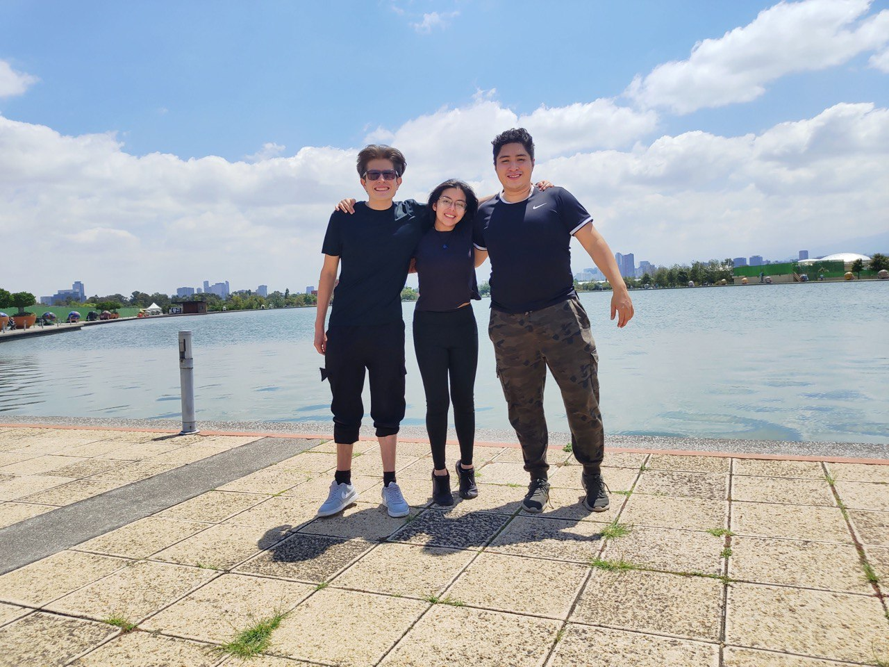

I really like this picture because it brings me back cool memories.

I'm Mario Rosas Otero, I received my undergraduate degree in Technology from the National Autonomus University of
México.
I enjoy a lot coding, it's one of my passions. Some of my principal interests are Applied Mathematics, Artificial
Intelligence,
Cryptography & Quantum Computing.I have mainly colaborated in research groups developing projects related to my
interests where
I published some papers. I'm also executive board member (volunteer) at RIIAA an international conference focused
on catalyze the
AI ecosystem in LATAM.
My professional goal is to partitipate in research and development areas either in academia or in the private
sector. I aim to contribute with technical and scientific knowledge for the benefit of society and institutions I
colaborate with. Obtain and provide knowledge to multidisciplinary projects to generate solutions from scientific
and technological perspective to problems of various kinds.
I think one of my greatest achievements is to have established a real and well-consolidated friendship with Ruben and Natalia. People I can trust and with whom I share very cool life experiences.
I am very proud of the academic work I have collaborated on. Those projects have taught me many things personally and professionally and have given me the opportunity to explore new areas of knowledge, places and meet new people.
I consider my musical preferences to be very broad, but if you want to listen to some songs that I really like feel free to click on any of the items in the list:
| Class | English | Spanish | ||
| Mithology | Mythology by parcast | Myths and Legends | Origen de los dioses del olimpo | Dioses Aztecas |
| Nordic ythology Podcast | Mythology and Fiction Explained | Que los dioses hicieron QUE?! | ||
| Programming | The commit show | Learn Code | Programar es una mierda | Programador X |
| Science | Quantum FM | Science Magazine Podcast | La ciencia Vs | Shots de Ciencia |
| Discovey | Wired Science | La ciencia pop | Mándarax | |